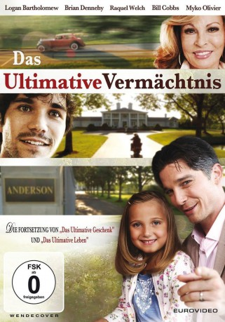

#3894 Das Ultimative Vermächtnis
Alternativ: The Ultimate Legacy
 
 IMDB-Wertung: 5.7 / 10
IMDB-Wertung: 5.7 / 10  Metascore: 0
Metascore: 0 
Die Abenteuer von Jason Stevens (Logan Bartholomew) gehen weiter. Im letzten Teil der Trilogie muss Jason nun versuchen, dem Globetrotter und Adrenalin-Junkie Joey Anderson (Myko Olivier) bei einer ähnlichen Reise wie seiner eigenen zu helfen. Nach dem Tod seiner Großmutter Sally Mae Anderson (Raquel Welch) erfährt Joey, dass sie ihm neben einem stattlichen Vermögen auch ihr Anwesen „Anderson House“ überlassen hat. Allerdings kann er sein Erbe nur antreten, wenn er ein Jahr dort lebt und arbeitet und die Prüfungen besteht, die Sally Mae in ihrem Vermächtnis für ihn vorgesehen hat. Jason weiß genau, wie sich Joey fühlt, und steht ihm bei dieser Herausforderung als Mentor zur Seite.
Jahr: 2015
Dauer: 99 Minuten
FSK:
Land: USA Studio: Hallmark Channel, TheTonspuren: DTS - ,
Untertitel: Deutsch, Englisch,
Auflösung: 1080p (1920x1080) Größe: 6318 MB
Genre: Drama, Komödie, Abenteuer, Familie
Regisseur: Joanne Hock
Drehbuch: Rick Berman
Soundtrack:
Darsteller:
 Raquel Welch als Miss Sally May Anderson
Raquel Welch als Miss Sally May Anderson Doug Jones als Hawthorne
Doug Jones als Hawthorne Brian Dennehy als Gus
Brian Dennehy als Gus Lee Meriwether als Miss Hastings
Lee Meriwether als Miss Hastings Bill Cobbs als Mr. Theodore Hamilton
Bill Cobbs als Mr. Theodore Hamilton Ali Hillis als Alexia Stevens
Ali Hillis als Alexia Stevens- Kayla Perkins als Waitress
- Logan Bartholomew als Jason Stevens
- Myko Olivier als Joey Anderson
- Shelby Taylor Mullins als Waitress / Concert Goer
- Kurt Yaeger als Michael
- Tory L. Beckham als Concert Patron
- Katie McClellan als Kelly
- Torry Martin als Oscar
- Megan Blake als Claudia
- Kim Baptiste als Angelica Hamilton
- Beau Davidson als Maximilian Swayne
 Lea Hutton Beasmore als Concert Attendee
Lea Hutton Beasmore als Concert Attendee- Rocco Pepe als Military Veteran
 Michelle Poole als Ballroom Guest
Michelle Poole als Ballroom Guest- Kenny Santiago Marrero als Truck Driver
- Cory Scott Allen als Lino
- Charles Poole als Ballroom Guest
- Kk Heim als Chloe
- Christina Lambert als Party Guest
 William Willet als Extra
William Willet als Extra- DonShea Stringer als Concert Goer
- Sonny Burnette als Funeral guest
- Ryan Poole als Ballroom Guest
- Sean Ramey als Thug One
- James Siderits als Ballroom Guest
- Angie Willmott als Funeral Guest
- James Tackett als Bodyguard
- Jim Stovall als Sam
- Michael Brian Montgomery als Landscape worker
- Lare Roberts als Attorney
- Emmalee Parker als Concert Attendant
- John Hawk als Steve Forbes
- James Wolford Hardin als Homeless Man
- Tifani Ahren Davis als Flower Shopper
 Kenneth Meyer als Businessman
Kenneth Meyer als Businessman- Chris Petty als Thug Two
- Louis Robert Thompson als Corky
- James Michael Cooper als Garden Construction Worker
- Mike Seely als Ulrik Kiel
- Robin Michelle Taylor als Funeral Choir Member
- Craig Lemons als Funeral Guest
- Victoria Male als Kim
- R. Wayne Hogue Jr. als Bar Patron
- Smiley als Smiley the Dog
Datei: X:\3-Trilogie(N-Z)\Ultimativ - Gift of a Legacy\Ultimative Vermächtnis, Das (2015, FSK, 1920x1080).mkv seit 29.06.2016
Festplatte: HD Collection-3(N-Z)-6(A-Z)
 Alle Filme aus Gruppe '3-Trilogie(N-Z)\Ultimativ - Gift of a Legacy'
Alle Filme aus Gruppe '3-Trilogie(N-Z)\Ultimativ - Gift of a Legacy'